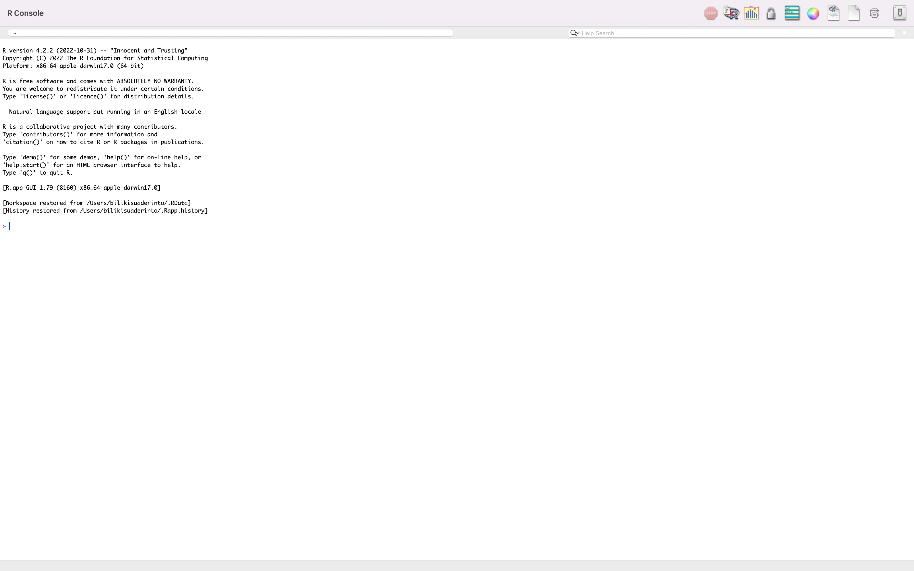
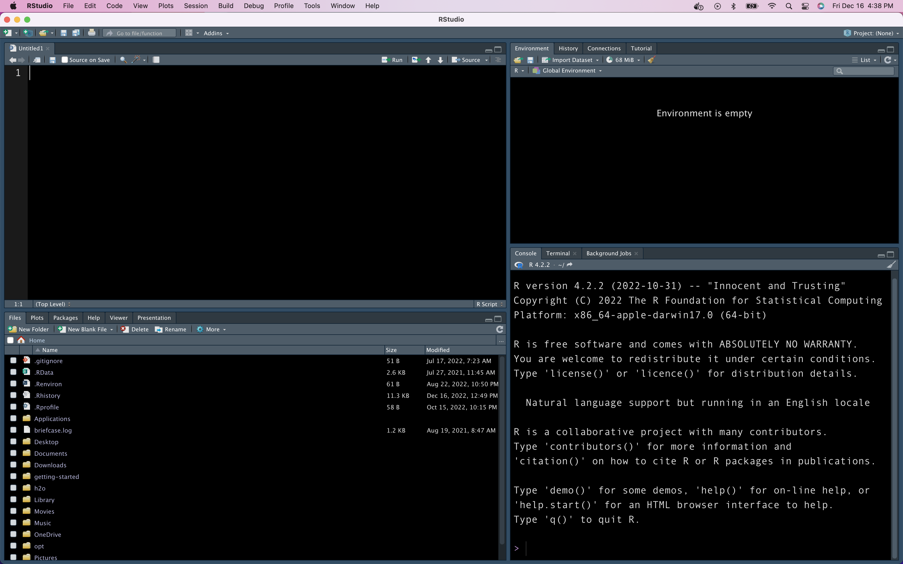
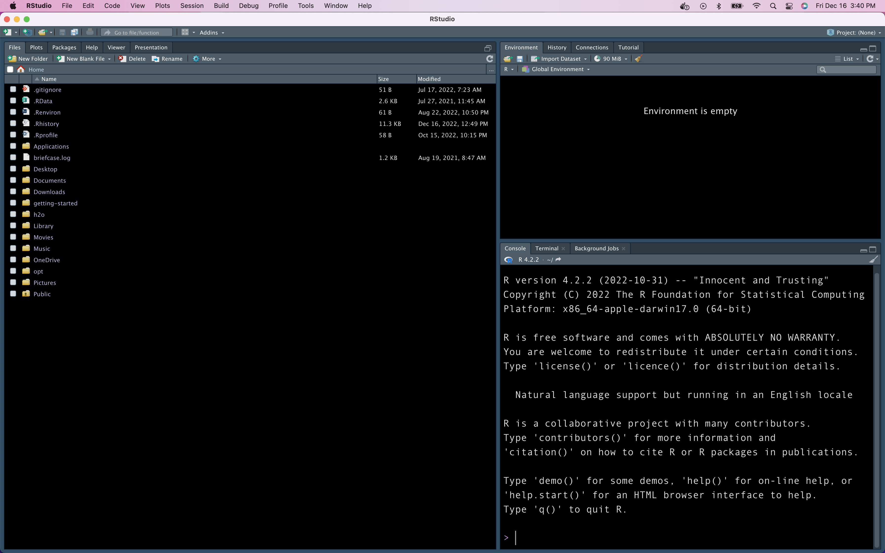
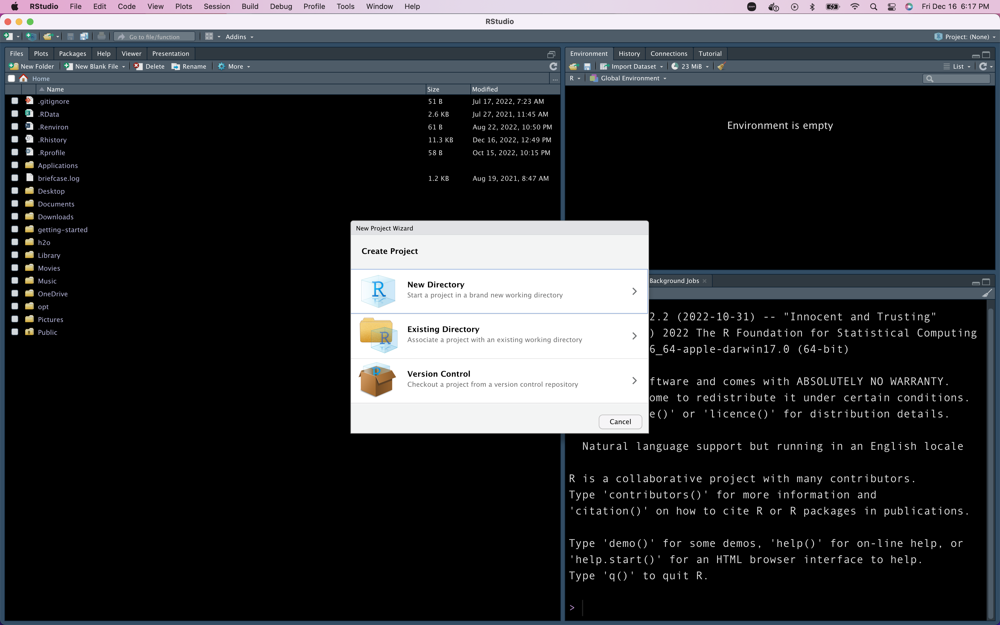

Data Analytics Workshop - DAY 1
Housekeeping
Intro 👋
Workshop materials ⬇️
Break 🕘
Today’s Take-away 📋
Today’s Take-away
- Introduction to R
- Data Analysis using R?
- Q/A
- Thank You
Introduction to R
1 2 3 4 5 6
What is R?
1 2 3 4 5 6
- R is a programming language and software environment for statistical computing and graphics.
- It’s used in the field of data science for data analysis, visualization, and statistical modeling.
Why R?
1 2 3 4 5 6
R is open-source and has a large community of users who contribute to its development and support with online resources.
It offers a variety of packages for data manipulation, machine learning, and visualization.
It is widely used in academia and industry, making it a valuable skill for professionals in various fields.
R is highly flexible and allows users to create custom functions and scripts, making it suitable for a wide range of data analysis tasks.
Installing R and RStudio
1 2 3 4 5 6
Download and install R [FIRST] R language
Next, download and install RStudio IDE
Difference between R and RStudio IDE
1 2 3 4 5 6


Getting to know RStudio IDE
1 2 3 4 5 6

codes are displayed, executed here but not stored
environment data are displayed up here
project files displayed here
Getting to know RStudio IDE
1 2 3 4 5 6
codes are here
environment data are displayed up here
code can also
go here
File and Project Structure in RStudio IDE
1 2 3 4 5 6
- Root - Project Directory
- Data - Data Directory
- R(optional) - Custom functions
- Rmd - Reports Directory
- scripts - Scripts directory
- Output - plots and tables directory

Creating R Project
1 2 3 4 5 6

Getting help
1 2 3 4 5 6
R Variables
1 2 3 4 5 6
- Variables as containers for storing values of data.
- Variables are created using the assignment operator
<-or=.
Example
- Text values are surrounded by double or single quotes while numeric are not surrounded by quotes.
R Variables
1 2 3 4 5 6
- Values in variable are accessed using the name of the variable.
- You can also print variables with the print function in R.
R Variables
1 2 3 4 5 6
- You can assign multiple variables in R.
- The
c()also known as the combine function lets you assign two or more values to a variable in R.
Variable Naming
1 2 3 4 5 6
Variable names should :
- be meaningful and descriptive of the value assigned to it
- start with characters
(a-z), a combination of characters(a-z), underscores(_),digits and periods(.)
- not start with digits or underscores
(_)
- not start with a period followed by a digit`(.4)
- not be Special words in R such as
(TRUE, FALSE, NULL,if,else,while,for), etc
Variable Naming
1 2 3 4 5 6
Variables in R are case sensitive i.e Age and age are not the same variable.
Valid Variable Names
Variable Naming
1 2 3 4 5 6
Invalid Variable Names
Arithmetic and Logical Operations in R
1 2 3 4 5 6
- addition
(+)
- subtraction
(-)
- multiplication
(*)
- division
(/)
- exponent
(^)
- Integer division
(%/%)
- Remainder division
(%%)
Arithmetic and Logical Operations in R
1 2 3 4 5 6
Examples:
Other Operators
1 2 3 4 5 6
Comparison Operators - (==), (!=), (>), (<), (<=), (>=)
Logical Operators - (&), (|), (!)
Data Types
1 2 3 4 5 6
5 major data types:
- numeric
- integer
- complex
- character
- logical
Data Types
1 2 3 4 5 6
In this workshop, we will treat just numeric, integer, character and logical.
numeric
integer
Data Types
1 2 3 4 5 6
character
logical(TRUE or FALSE)
Data Types
1 2 3 4 5 6
- data type of a variable can be checked using the
class()function
Data Structures
1 2 3 4 5 6
- a collection of data types, which can be similar or different from each other.
- A data is divided into 6 major types;
Vectors
Lists
Matrices
Arrays
Data Frames
Factors
Vectors
1 2 3 4 5 6
- contain items or values of the same data type.
- values are usually combined with the
c()function separated by,.
Vectors
1 2 3 4 5 6
- You can check for the length of vector using the
length()function.
- You can sort a vector with the
sort()function.
Vectors
1 2 3 4 5 6
- access an item in a vector by its index number
[1] "Orange"[1] "Orange" "Water Melon" "PawPaw" - access multiple elements
Lists
1 2 3 4 5 6
contain many different data types
created using the
list()function.
Lists
1 2 3 4 5 6
- You can change the value of an item in a list
- You can remove list items by using negative indexing
Lists
1 2 3 4 5 6
- You can add an item to the end of alist with the
append()function
Matrices
1 2 3 4 5 6
- two dimensional data made up of columns and rows
- created with the
matrix()function
- A matrix of strings can also be created
Matrices
1 2 3 4 5 6
Matrices
1 2 3 4 5 6
- access matrix items with square brackets
Matrices
1 2 3 4 5 6
- add rows and columns to a matrix with the
rbind()andcbind()function respecively.
Matrices
1 2 3 4 5 6
- You can check for the number of rows and columns with the
dim()function
Arrays
1 2 3 4 5 6
- Unlike matrices, Arrays have more than two dimensions.
- The
array()function is used to create an array.
Arrays
1 2 3 4 5 6
Arrays
1 2 3 4 5 6
- Array items can also be accessed by indexing with the squaed brackets
- Dimension of an array can also be checked with the
dim()function
Data Frames
1 2 3 4 5 6
- data displayed in tabular format
- consists of columns of different data types, but each column contain values of the same data types.
- created with the
data.frame()function.
Data Frames
1 2 3 4 5 6
- You can summarize a data frame using the
summary()function
Data Frames
1 2 3 4 5 6
- Items in a dataframe can be assigned with square brackets
[],double brackets[[]]or dollar signs$.
Data Frames
1 2 3 4 5 6
- You can add new rows and columns to the data using the
rbind()andcbind()functions respectively.
name age married
1 Joy 43 TRUE
2 John 21 FALSE
3 Rebecca 45 FALSE
4 Johnson 49 FALSE name age married Children
1 Joy 43 TRUE 5
2 John 21 FALSE 1
3 Rebecca 45 FALSE 8Data Frames
1 2 3 4 5 6
- Rows can be removed with negative indexing
Data Frames
1 2 3 4 5 6
- You can combine two data frames with the
cbind()function
Data Frames
1 2 3 4 5 6
Data Analysis and Visualization
1 2 3 4 5 6
Importing and Exporting Data
1 2 3 4 5 6
- Before a data can be used in R, it needs to be imported and saved as a variable.
- A data is imported using the
read.csv()function. - The data will be working with is the sales data
Importing and Exporting Data
1 2 3 4 5 6
- The
read.csv()takes the file path of the data as an argument. - Data can also be exported using the
write.csv()function. - let’s subset some columns in the data and export.
Analyzing Data
1 2 3 4 5 6
- You can get a view of the whole data on a new tab using the
View()function or use thehead()function to get the first 5 rows.
| date | warehouse | client_type | product_line | quantity | unit_price | total | payment |
|---|---|---|---|---|---|---|---|
| 1/6/2021 | Central | Retail | Miscellaneous | 8 | 16.85 | 134.83 | Credit card |
| 1/6/2021 | North | Retail | Breaking system | 9 | 19.29 | 173.61 | Cash |
| 1/6/2021 | North | Retail | Suspension & traction | 8 | 32.93 | 263.45 | Credit card |
- You can check the data types of your data using the
str()function.
'data.frame': 1000 obs. of 8 variables:
$ date : chr "1/6/2021" "1/6/2021" "1/6/2021" "1/6/2021" ...
$ warehouse : chr "Central" "North" "North" "North" ...
$ client_type : chr "Retail" "Retail" "Retail" "Wholesale" ...
$ product_line: chr "Miscellaneous" "Breaking system" "Suspension & traction" "Frame & body" ...
$ quantity : int 8 9 8 16 2 40 2 10 40 6 ...
$ unit_price : num 16.9 19.3 32.9 37.8 60.5 ...
$ total : num 135 174 263 605 121 ...
$ payment : chr "Credit card" "Cash" "Credit card" "Transfer" ...Analyzing Data
1 2 3 4 5 6
- You can check for the descriptive statistics using the
summary()function
date warehouse client_type product_line
Length:1000 Length:1000 Length:1000 Length:1000
Class :character Class :character Class :character Class :character
Mode :character Mode :character Mode :character Mode :character
quantity unit_price total payment
Min. : 1.000 Min. :10.03 Min. : 10.35 Length:1000
1st Qu.: 4.000 1st Qu.:21.09 1st Qu.: 93.69 Class :character
Median : 6.500 Median :28.57 Median : 178.36 Mode :character
Mean : 9.395 Mean :30.32 Mean : 289.11
3rd Qu.:10.000 3rd Qu.:37.92 3rd Qu.: 321.69
Max. :40.000 Max. :66.62 Max. :2546.33 Analyzing Data
1 2 3 4 5 6
- Let’s find out the total amount of all sales made.
- Total payment by cash
- Most expensive item by unit price
Analyzing Data
1 2 3 4 5 6
- Total sales made in each warehouse
Visualization
1 2 3 4 5 6
- Data visualization are performed in R using the ggplot2 package.
- Let’s find the frequency of sales made by warehouse.

Visualization
1 2 3 4 5 6
- Let’s also find the total sales made by each client from the various warehouses.

Visualization
1 2 3 4 5 6
- Let’s also see the payment system with the highest transactions.

Q/A
1 2 3 4 5 6
Thank You
1 2 3 4 5 6
Comments
1 2 3 4 5 6
#